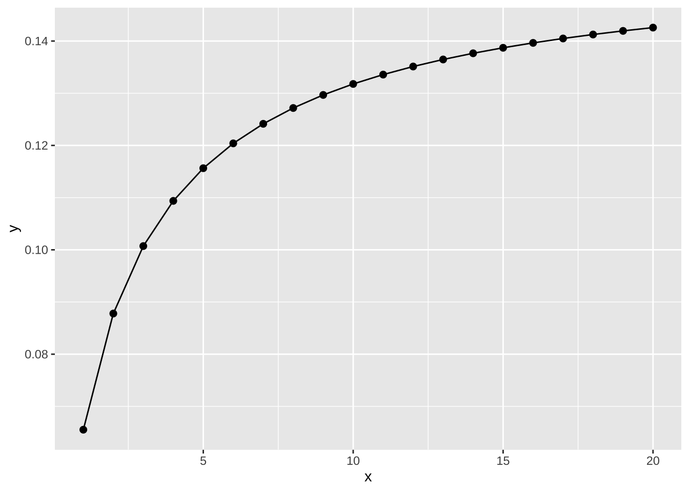
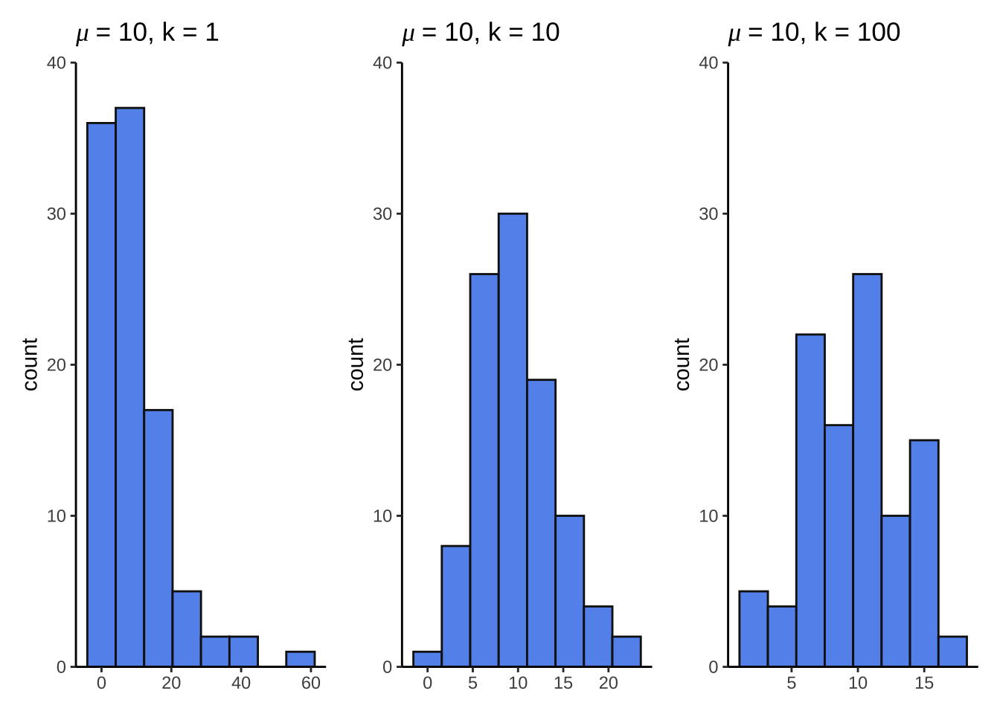
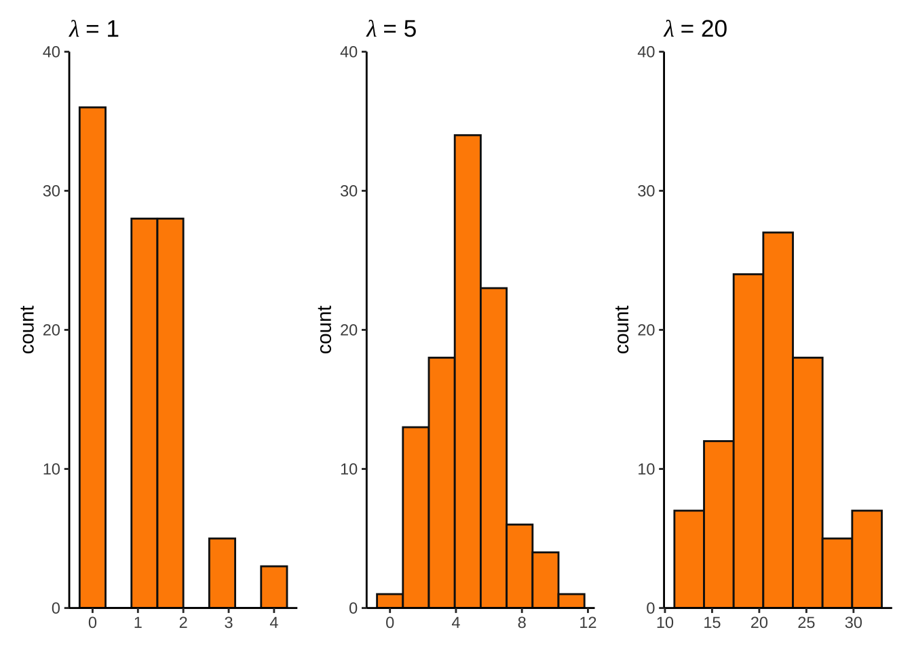
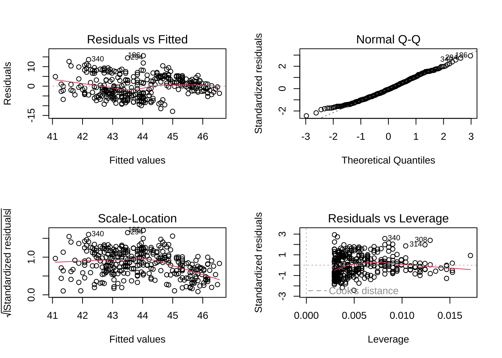
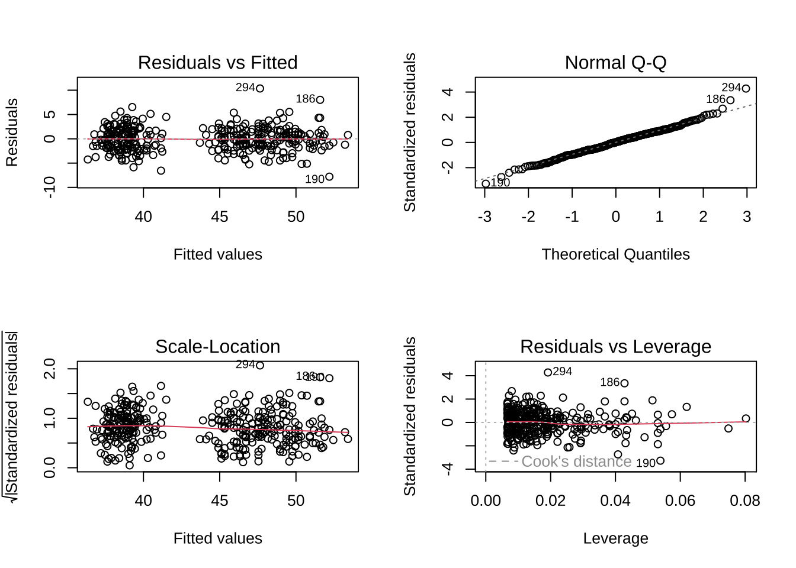
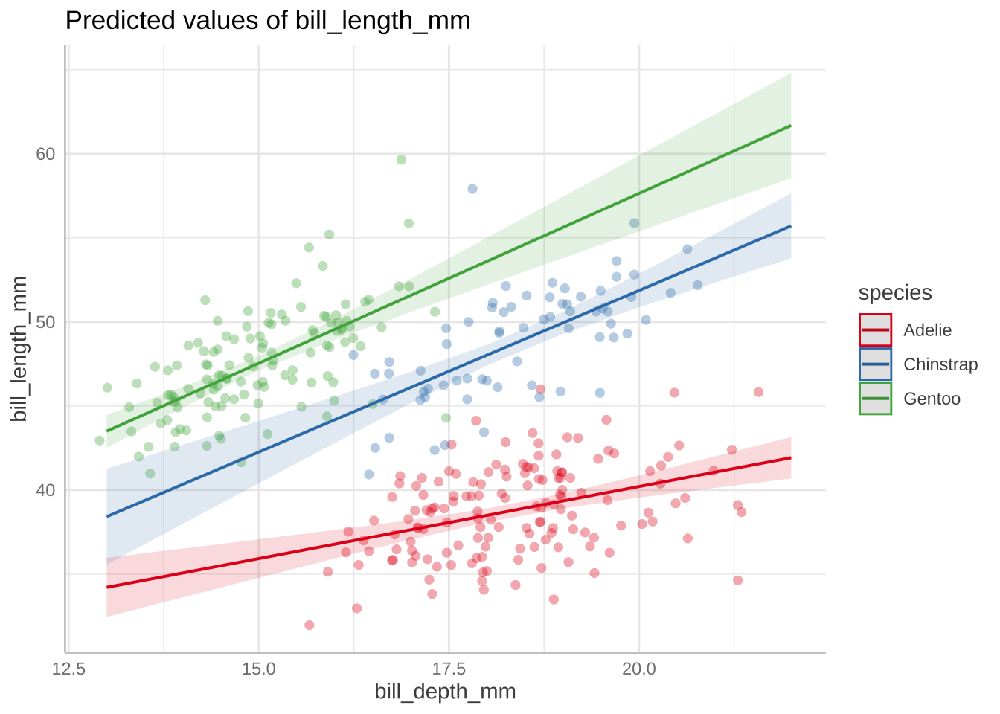
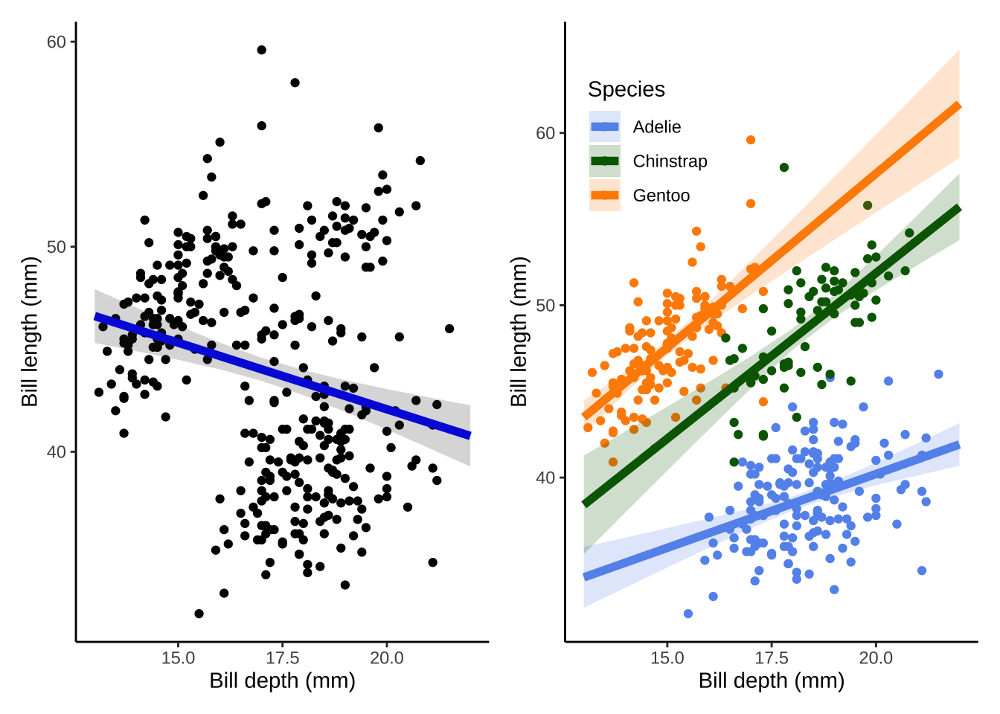

Code
library(tidyverse)
library(showtext)
font_add_google("Lato", "Lato")
showtext_auto()
library(patchwork)
library(palmerpenguins)
library(ggeffects)
library(equatiomatic)
library(lmtest)June 5, 2023
\[ E[y_i] = a + bx_i \]
\[ var[y_i] = s^2 \]
\[ E[y_i] = a + bx_i \]
\[ var[y_i] = v(E[y_i]) \]
\[ Y_i \sim N(\mu_i, \sigma^2) \]
\[ \eta_i = \sum^{p-1}_{n = 0}\beta_jx_{ij} \]
\[ g(\mu_i) = \eta_i \]
set.seed(666)
nbinom_df <- bind_cols(
size1 = rnbinom(mu = 10, size = 1, n = 100),
size10 = rnbinom(mu = 10, size = 10, n = 100),
size100 = rnbinom(mu = 10, size = 100, n = 100)
)
ggplot(data.frame(x = 1:20), aes(x)) +
stat_function(geom = "point", n = 20, fun = dnbinom, args = list(mu = 4, x = 5), size = 2) +
stat_function(geom = "line", n = 20, fun = dnbinom, args = list(mu = 4, x = 5))
size1 <- ggplot(nbinom_df, aes(x = size1)) +
geom_histogram(bins = 8, fill = "cornflowerblue", color = "grey8") +
scale_y_continuous(expand = c(0, 0), limits = c(0, 40)) +
theme_classic() +
labs(title = expression(mu~"= 10, k = 1")) +
theme(axis.title.x = element_blank())
size10 <- ggplot(nbinom_df, aes(x = size10)) +
geom_histogram(bins = 8, fill = "cornflowerblue", color = "grey8") +
scale_y_continuous(expand = c(0, 0), limits = c(0, 40)) +
theme_classic() +
labs(title = expression(mu~"= 10, k = 10")) +
theme(axis.title.x = element_blank())
size100 <- ggplot(nbinom_df, aes(x = size100)) +
geom_histogram(bins = 8, fill = "cornflowerblue", color = "grey8") +
scale_y_continuous(expand = c(0, 0), limits = c(0, 40)) +
theme_classic() +
labs(title = expression(mu~"= 10, k = 100")) +
theme(axis.title.x = element_blank())
size1 + size10 + size100
set.seed(666)
pois_df <- bind_cols(
lambda1 = rpois(lambda = 1, n = 100),
lambda5 = rpois(lambda = 5, n = 100),
lambda20 = rpois(lambda = 20, n = 100)
)
lambda1 <- ggplot(pois_df, aes(x = lambda1)) +
geom_histogram(bins = 8, fill = "darkorange", color = "grey8") +
scale_y_continuous(expand = c(0, 0), limits = c(0, 40)) +
theme_classic() +
labs(title = expression(lambda~"= 1")) +
theme(axis.title.x = element_blank())
lambda5 <- ggplot(pois_df, aes(x = lambda5)) +
geom_histogram(bins = 8, fill = "darkorange", color = "grey8") +
scale_y_continuous(expand = c(0, 0), limits = c(0, 40)) +
theme_classic() +
labs(title = expression(lambda~"= 5")) +
theme(axis.title.x = element_blank())
lambda20 <- ggplot(pois_df, aes(x = lambda20)) +
geom_histogram(bins = 8, fill = "darkorange", color = "grey8") +
scale_y_continuous(expand = c(0, 0), limits = c(0, 40)) +
theme_classic() +
labs(title = expression(lambda~"= 20")) +
theme(axis.title.x = element_blank())
lambda1 + lambda5 + lambda20

Call:
lm(formula = bill_length_mm ~ bill_depth_mm, data = penguins)
Residuals:
Min 1Q Median 3Q Max
-12.8949 -3.9042 -0.3772 3.6800 15.5798
Coefficients:
Estimate Std. Error t value Pr(>|t|)
(Intercept) 55.0674 2.5160 21.887 < 2e-16 ***
bill_depth_mm -0.6498 0.1457 -4.459 1.12e-05 ***
---
Signif. codes: 0 '***' 0.001 '**' 0.01 '*' 0.05 '.' 0.1 ' ' 1
Residual standard error: 5.314 on 340 degrees of freedom
(2 observations deleted due to missingness)
Multiple R-squared: 0.05525, Adjusted R-squared: 0.05247
F-statistic: 19.88 on 1 and 340 DF, p-value: 1.12e-05 2.5 % 97.5 %
(Intercept) 50.1185795 60.0161600
bill_depth_mm -0.9364867 -0.3631844bill_model_preds <- ggpredict(bill_model, terms = "bill_depth_mm")
model_plot <- ggplot(penguins, aes(x = bill_depth_mm, y = bill_length_mm)) +
geom_point() +
geom_line(data = bill_model_preds, aes(x = x, y = predicted), color = "blue", linewidth = 2) +
geom_ribbon(data = bill_model_preds, aes(x = x, y = predicted, ymin = conf.low, ymax = conf.high), alpha = 0.2) +
theme_classic() +
labs(x = "Bill depth (mm)", y = "Bill length (mm)")\[ length = -0.65*depth + 55.07 \]

Call:
lm(formula = bill_length_mm ~ bill_depth_mm * species, data = penguins)
Residuals:
Min 1Q Median 3Q Max
-7.7888 -1.5415 0.0575 1.5873 10.3590
Coefficients:
Estimate Std. Error t value Pr(>|t|)
(Intercept) 23.0681 3.0165 7.647 2.18e-13 ***
bill_depth_mm 0.8570 0.1641 5.224 3.08e-07 ***
speciesChinstrap -9.6402 5.7154 -1.687 0.092590 .
speciesGentoo -5.8386 4.5353 -1.287 0.198850
bill_depth_mm:speciesChinstrap 1.0651 0.3100 3.435 0.000666 ***
bill_depth_mm:speciesGentoo 1.1637 0.2789 4.172 3.84e-05 ***
---
Signif. codes: 0 '***' 0.001 '**' 0.01 '*' 0.05 '.' 0.1 ' ' 1
Residual standard error: 2.445 on 336 degrees of freedom
(2 observations deleted due to missingness)
Multiple R-squared: 0.8024, Adjusted R-squared: 0.7995
F-statistic: 272.9 on 5 and 336 DF, p-value: < 2.2e-16Likelihood ratio test
Model 1: bill_length_mm ~ bill_depth_mm * species
Model 2: bill_length_mm ~ 1
#Df LogLik Df Chisq Pr(>Chisq)
1 7 -787.97
2 2 -1065.28 -5 554.62 < 2.2e-16 ***
---
Signif. codes: 0 '***' 0.001 '**' 0.01 '*' 0.05 '.' 0.1 ' ' 1Analysis of Variance Table
Response: bill_length_mm
Df Sum Sq Mean Sq F value Pr(>F)
bill_depth_mm 1 561.6 561.6 93.965 < 2.2e-16 ***
species 2 7460.3 3730.2 624.151 < 2.2e-16 ***
bill_depth_mm:species 2 134.3 67.1 11.232 1.898e-05 ***
Residuals 336 2008.1 6.0
---
Signif. codes: 0 '***' 0.001 '**' 0.01 '*' 0.05 '.' 0.1 ' ' 1Wald test
Model 1: bill_length_mm ~ bill_depth_mm * species
Model 2: bill_length_mm ~ 1
Res.Df Df F Pr(>F)
1 336
2 341 -5 272.95 < 2.2e-16 ***
---
Signif. codes: 0 '***' 0.001 '**' 0.01 '*' 0.05 '.' 0.1 ' ' 1
bill_model2_preds <- ggpredict(bill_model2, terms = c("bill_depth_mm", "species"))
model2_plot <- ggplot(penguins, aes(x = bill_depth_mm, y = bill_length_mm)) +
geom_point(aes(color = species)) +
geom_line(data = bill_model2_preds, aes(x = x, y = predicted, color = group), linewidth = 2) +
geom_ribbon(data = bill_model2_preds, aes(x = x, y = predicted, ymin = conf.low, ymax = conf.high, fill = group), alpha = 0.2) +
scale_color_manual(values = c("cornflowerblue", "darkgreen", "darkorange")) +
scale_fill_manual(values = c("cornflowerblue", "darkgreen", "darkorange")) +
theme_classic() +
labs(x = "Bill depth (mm)", y = "Bill length (mm)",
color = "Species", fill = "Species") +
theme(legend.position = c(0.2, 0.8))
model_plot + model2_plot
\[ \operatorname{bill\_length\_mm} = \alpha + \beta_{1}(\operatorname{bill\_depth\_mm}) + \epsilon \]
\[ \operatorname{bill\_length\_mm} = \alpha + \beta_{1}(\operatorname{bill\_depth\_mm}) + \beta_{2}(\operatorname{species}_{\operatorname{Chinstrap}}) + \beta_{3}(\operatorname{species}_{\operatorname{Gentoo}}) + \beta_{4}(\operatorname{bill\_depth\_mm} \times \operatorname{species}_{\operatorname{Chinstrap}}) + \beta_{5}(\operatorname{bill\_depth\_mm} \times \operatorname{species}_{\operatorname{Gentoo}}) + \epsilon \]
\[ \operatorname{bill\_length\_mm} = \alpha + \beta_{1}(\operatorname{bill\_depth\_mm}) + \epsilon \]
@online{bui2023,
author = {Bui, An},
title = {Lecture 10 Figures},
date = {2023-06-05},
url = {https://an-bui.github.io/ES-193DS-W23/lecture/lecture-10_2023-06-05.html},
langid = {en}
}